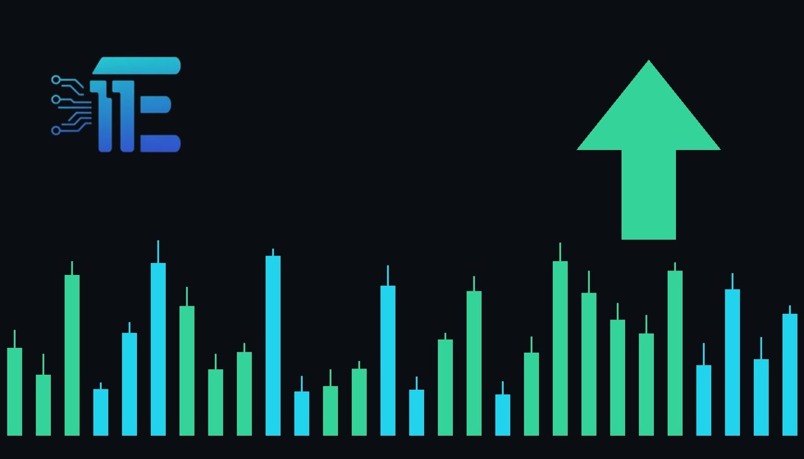

Gold ETFs Eye Momentum Amid Fed Rate Hike and Oil RisksETFs រំពឹងទទួលបានកម្លាំងរុញច្រើនថ្មីចំពេលមានហានិភ័យអត្រាការប្រាក់ និងប្រេង
XAU/USD impact: ▲ Bullishផលប៉ះពាល់លើ XAU/USD: ▲ ឡើង

Gold exchange-traded funds could regain momentum if easing rate expectations and geopolitical risks outweigh inflationary pressures. Such shifts directly impact XAU/USD through changing yield expectations and safe-haven flows.
ETFs អាចនឹងទទួលបានកម្លាំងរុញច្រើនឡើងវិញ ប្រសិនបើការរំពឹងទុកនៃការបន្ថយអត្រាការប្រាក់ និងហានិភ័យភូមិសាស្ត្រនយោបាយមានទម្ងន់ធ្ងន់ជាងសម្ពាធអតិផរណា។ កត្តាទាំងនេះប៉ះពាល់ផ្ទាល់ដល់ XAU/USD តាមរយៈការផ្លាស់ប្តូរទិន្នផល
Gold exchange-traded funds, including GLD, IAU, and GLDM, are positioned to potentially regain market momentum as participants weigh competing macroeconomic forces. The interplay between shifting monetary policy expectations and global oil risks remains a central focus for precious metals participants tracking bullion valuations.
ETFs រួមមាន GLD, IAU និង GLDM ស្ថិតក្នុងស្ថានភាពដែលអាចនឹងទទួលបានកម្លាំងរុញច្រើនក្នុងទីផ្សារឡើងវិញ ខណៈដែលអ្នកពាក់ព័ន្ធកំពុងថ្លឹងថ្លែងពីកម្លាំងម៉ាក្រូសេដ្ឋកិច្ចប្រកួតប្រជែងគ្នា។ និងហានិភ័យប្រេងសកល នៅតែជាចំណុចផ្តោតសំខាន់សម្រាប់អ្នកតាមដានតម្លៃលោហៈមានតម្លៃ។
The transmission channel to XAU/USD operates primarily through real yields, rate expectations, and safe-haven demand. When easing interest rate projections reduce the opportunity cost of holding non-yielding bullion, upward pressure on gold typically follows. Simultaneously, geopolitical conflicts and energy price volatility enhance safe-haven appeal, supporting the precious metal against broader macroeconomic headwinds.
បណ្តាញបញ្ជូនផលប៉ះពាល់ទៅលើ XAU/USD គឺតាមរយៈទិន្នផលពិត ការរំពឹងទុកអត្រាការប្រាក់ និងតម្រូវការសុវត្ថិភាព។ នៅពេលដែលការព្យាករអត្រាការប្រាក់ទាបជាងមុនកាត់បន្ថយការខាតបង់ឱកាសនៃការកាន់កាប់មាស វាតែងតែជំរុញឱ្យតម្លៃមាសកើនឡើង។ ទន្ទឹមនឹងនេះដែរ ជម្លោះភូមិសាស្ត្រនយោបាយ និងភាពប្រែប្រួលនៃតម្លៃថាមពលបានកើនឡើង ដែលជួយទ្រទ្រង់មាសទល់នឹងសម្ពាធសេដ្ឋកិច្ចទូទៅ។
A balanced view suggests that if incoming data points toward a softer monetary policy stance combined with escalating geopolitical friction, market conditions would strongly support gold prices. Conversely, if persistent inflationary pressures driven by oil shocks force central banks to maintain higher interest rates, stronger yields and a firmer US dollar would pressure XAU/USD downwards.
ប្រសិនបើសទ្និនន័យថ្មីៗបង្ហាញពីគោលនយោបាយរូបិយវត្ថុបន់ស្រន់រួមផ្សំជាមួយភាពតានតឹងភូមិសាស្ត្រនយោបាយ ស្ថានភាពទីផ្សារនឹងគាំទ្រយ៉ាងខ្លាំងដល់តម្លៃមាស។ ផ្ទុយទៅវិញ ប្រសិនបើសម្ពាធអតិផរណាដែលជំរុញដោយវិបត្តិប្រេងបង្ខំឱ្យធនាគារកណ្តាលរក្សាអត្រាការប្រាក់ខ្ពស់ ទិន្នផលកាន់តែខ្លាំង និងដុល្លារអាមេរិកកាន់តែរឹងមាំនឹងដាក់សម្ពាធលើ XAU/USD ចុះក្រោម។
Traders monitoring these developments should watch upcoming central bank communications, key inflation prints, and energy market fluctuations. Observing shifts in the US dollar index and Treasury yields will provide essential clues regarding the near-term direction of gold.
អ្នកជួញដូរដែលតាមដានការវិវត្តទាំងនេះគួរតែពិនិត្យមើលសេចក្តីថ្លែងការណ៍របស់ធនាគារកណ្តាល ទិន្នន័យអតិផរណា និងការប្រែប្រួលទីផ្សារថាមពល។ ការសង្កេតមើលការផ្លាស់ប្តូរនៃសន្ទស្សន៍ដុល្លារអាមេរិក និងទិន្នផលប័ណ្ណបំណុលនឹងផ្តល់តម្រុយសំខាន់ៗអំពីទិសដៅរយៈពេលខ្លីរបស់មាស។
Market participants must remain cautious as macroeconomic data evolves rapidly. Understanding the delicate balance between rate cut bets and inflation risks is critical for evaluating the broader outlook for gold.
អ្នកចូលរួមក្នុងទីផ្សារត្រូវតែប្រុងប្រយ័ត្នព្រោះទិន្នន័យម៉ាក្រូសេដ្ឋកិច្ចមានការផ្លាស់ប្តូរយ៉ាងលឿន។ ការយល់ដឹងពីតុល្យភាពរវាងការរំពឹងទុកកាត់បន្ថយអត្រាការប្រាក់ និងហានិភ័យអតិផរណាគឺជារឿងសំខាន់សម្រាប់ការវាយតម្លៃទស្សនវិស័យទូទៅរបស់មាស។
Key takeawaysចំណុចសំខាន់ៗ
- Gold ETFs could regain momentum if rate easing and geopolitical risks outweigh inflation.
- មូលនិធិមាស ETFs អាចទទួលបានកម្លាំងរុញច្រើន ប្រសិនបើការបន្ធូរបន្ថយអត្រាការប្រាក់ និងហានិភ័យភូមិសាស្ត្រនយោបាយមានទម្ងន់ធ្ងន់ជាងអតិផរណា។
- The primary transmission channels for XAU/USD involve real yields, safe-haven flows, and energy shocks.
- បណ្តាញបញ្ជូនផលប៉ះពាល់សំខាន់ៗសម្រាប់ XAU/USD ពាក់ព័ន្ធនឹងទិន្នផលពិត សុវត្ថិភាព និងការភ្ញាក់ផ្អើលថាមពល។
- Traders should monitor central bank signals, US dollar strength, and energy market volatility.
- អ្នកជួញដូរគួរតែតាមដានសញ្ញាធនាគារកណ្តាល ភាពខ្លាំងរបស់ដុល្លារអាមេរិក និងភាពប្រែប្រួលនៃទីផ្សារថាមពល។
Original commentary by THE MARKET CODE, based on public reporting from Yahoo! Finance: GC=F News. Written with the help of AI. Educational only, not financial advice.
មតិវិភាគដើមដោយ THE MARKET CODE ផ្អែកលើការរាយការណ៍សាធារណៈពី Yahoo! Finance: GC=F News។ សរសេរដោយមានជំនួយពី AI។ មាតិកាអប់រំប៉ុណ្ណោះ មិនមែនជាដំបូន្មានហិរញ្ញវត្ថុទេ។